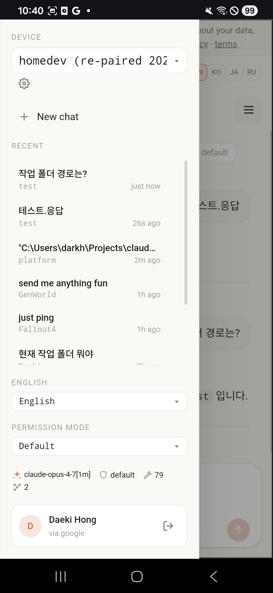
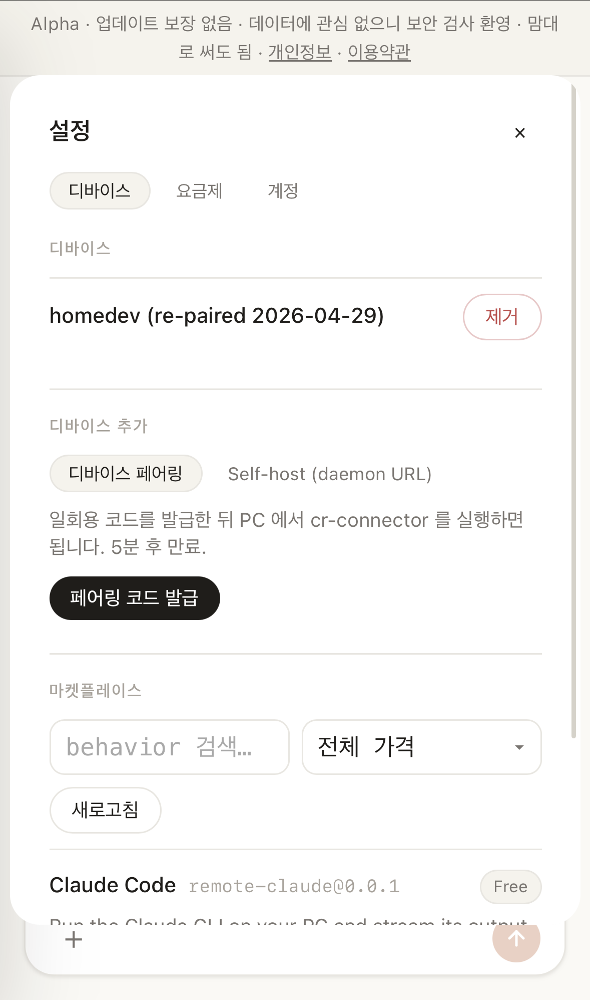
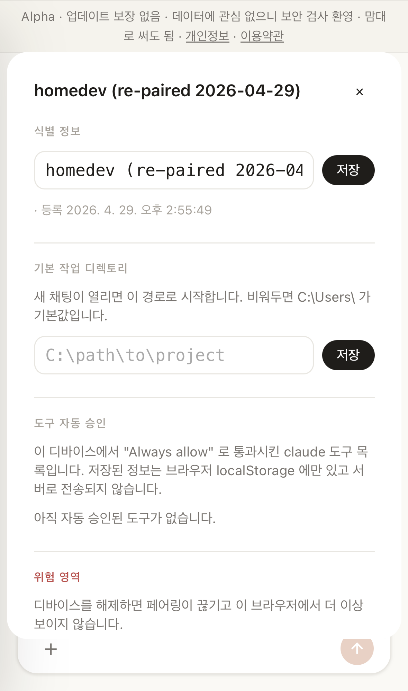

Role
Designed and implemented the product architecture, connector runtime, backend relay, frontend UX, device lifecycle, release packaging, and documentation.
A browser/mobile control plane for local agent execution on a user's own PC. The site coordinates identity, pairing, relay, and UX; the PC connector owns local execution. The first adapter targets Claude Code.
Designed and implemented the product architecture, connector runtime, backend relay, frontend UX, device lifecycle, release packaging, and documentation.
Agent work is most useful on a machine with the user's repo, shell, and tokens. But that also pins the workflow to one keyboard.
Keep execution local. Put a narrow browser/mobile control plane in front of a paired connector daemon. Relay only what is needed to drive the local behavior.
Alpha product: SaaS/self-host wiring, multi-device pairing, remote chat, diagnostics, unpair cleanup, tests, build, localization, and release packaging are wired.
The portfolio now shows the Play Store screenshot set captured from the live alpha: chat, navigation, device registration, and per-device diagnostics. The gallery is a compact contact sheet, large enough to inspect but small enough to keep the case study moving.
Screenshots from packaging/screenshots/play-store, used here as product evidence instead of a mockup.




The site should feel like a product, but the sensitive execution surface stays on the user's PC.
Auth and routing at the edge. Work and files stay on the paired machine.
Frontend. SolidJS + Vite SPA with four locale files, device picker, chat, diagnostics, approval modal, workspace picker, and Android Capacitor wrapper.
Backend. Cloudflare Workers + Hono. D1 stores users/devices/pairing/license state, KV handles replay guard, Durable Objects hold per-device outbound WebSocket relay state.
Connector. Bun daemon compiled for desktop distribution. It stores device identity locally, exposes a local authenticated HTTP surface, dials out to the site relay, and hosts behaviors.
Behavior runtime. The first behavior adapter starts/resumes Claude Code sessions, streams events, mediates approvals, enforces workspace guards, and keeps the browser UI decoupled from shell details.
The hard part is not only adding a device. It is keeping the browser, backend, relay, and local connector honest when a device disappears.
The site issues a short-lived code. The connector completes pairing, persists an Ed25519-backed identity and connection token, then joins the relay.
Users can inspect connector status, loaded behaviors, workspace roots, approval hooks, and agent CLI version from the device settings surface.
Deletion now clears selected device state, per-device browser preferences, Durable Object relay state, and local connector identity via an explicit CLI unpair command.
The alpha implementation avoids storing chat transcripts and user code in D1, KV, or logs. It is intentionally thinner than a hosted-code assistant. The practical release boundary is also explicit: the current outbound WebSocket relay passes plaintext request bodies through the site process, while WebRTC/E2E body encryption is reserved for the next trust-model hardening track.
That distinction matters. I prefer a product that states the boundary honestly, with the code and docs aligned, over a privacy claim that the architecture does not yet enforce.
DeskRelay sits beside Ops-Cure: one kernel-first, one product-first, both centered on remote agent runtimes.